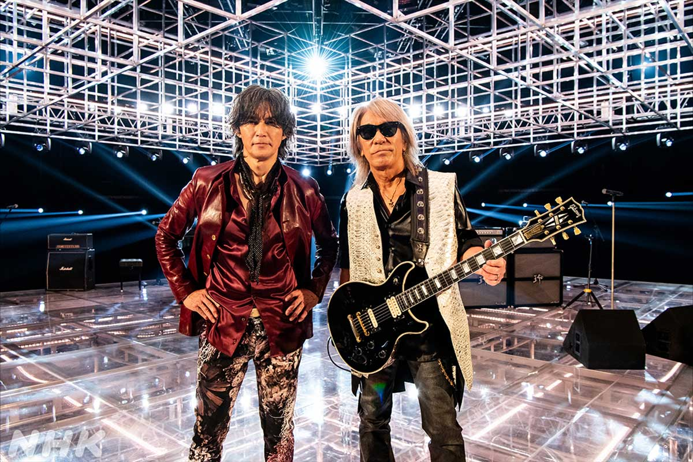
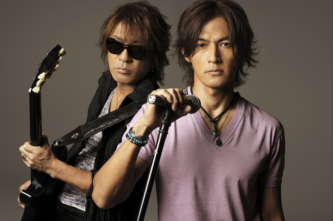
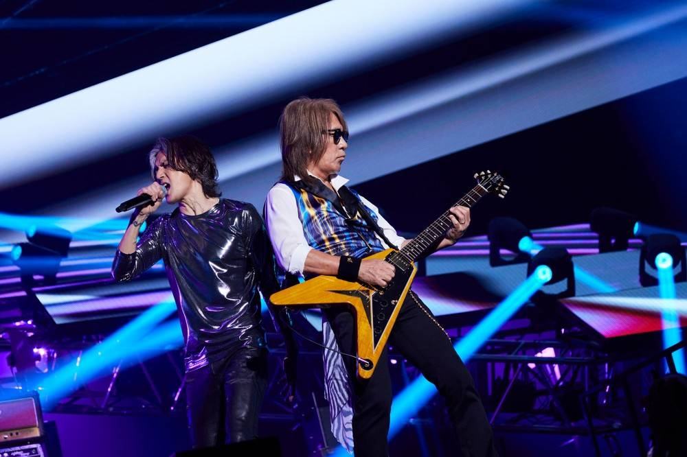
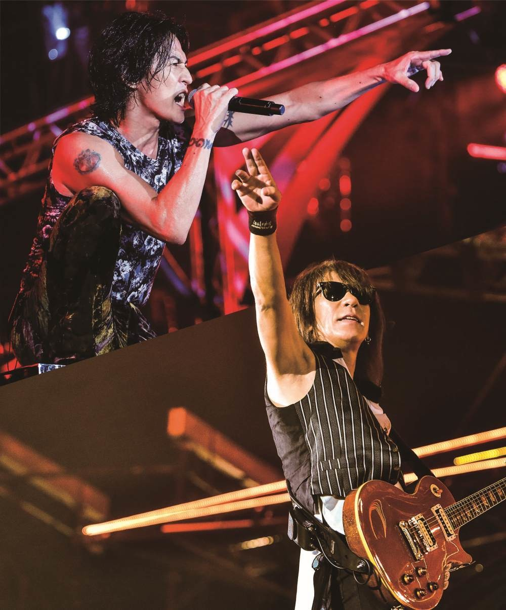
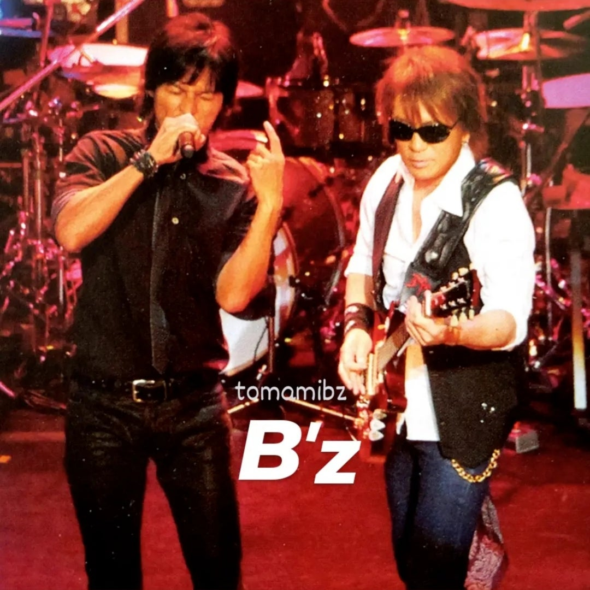
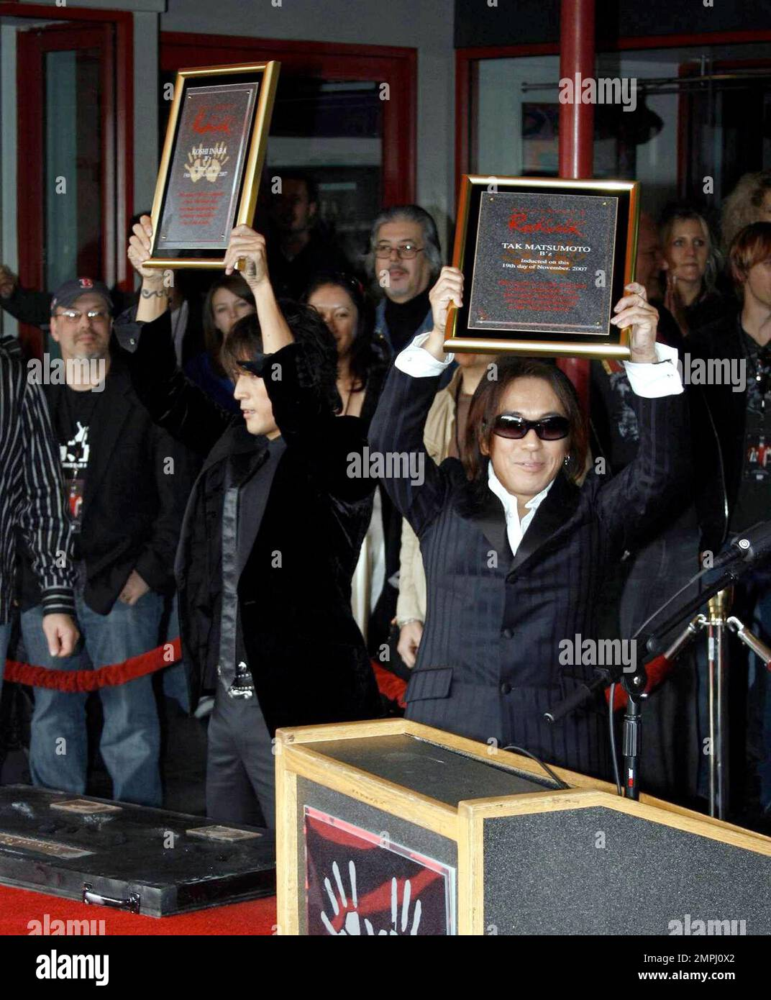
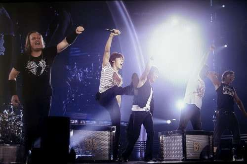

ORICON TOTAL SALES
突破 8,000 萬枚
日本 Oricon 公信榜設立以來最高
WORLDWIDE SALES
超過 1 億枚
2008 金氏世界紀錄認證藝人
MILLION SELLERS
15 單曲 / 19 專輯
累計 34 作百萬銷量傳奇紀錄
HOLLYWOOD'S ROCKWALK
2007 唯一亞洲
入選好萊塢搖滾名人堂音樂家
HISTORY & MILESTONES
CHRONICLE
叱吒風雲 90 年代至今・點擊任一紀錄查看完整典藏解說
THE DUO & SOUND EVOLUTION
BIOGRAPHY
日本雙人搖滾組合，讀做 [bi’z]，由吉他手松本孝弘與主唱稻葉浩志在 1988 年結成。1988 年以同時發售單曲〈所以請放開那隻手〉和專輯《B'z》正式出道，叱吒風雲 90 年代。早期全國巡迴演唱會最高紀錄多達 30 幾場，走過最輝煌的二十幾年，如今出道將近 40 年，留下無數跨世代搖滾經典。
數學教師執照與斷裂的吉他弦：傳奇起點〈Let It Be〉
稻葉浩志原本立志成為一名數學老師，大學畢業後甚至已經順利取得了數學教師執照，但心中對音樂與歌唱的熱情始終未曾熄滅。就在這個十字路口，當時正籌組新樂團的吉他手松本孝弘啟動了主唱徵選，稻葉浩志便抱著一試的心情前往面試。試音當天，當稻葉唱著披頭四的經典名曲〈Let It Be〉到一半時，松本手中的吉他弦竟突然應聲斷裂——然而就在那一瞬間，松本孝弘被他極具穿透力的嗓音深深震撼，當場拍板說道：「就決定是你了！」1988 年，日本搖滾史上最偉大的傳奇組合 B'z 就此正式誕生。
松本孝弘 TAK MATSUMOTO
- 職務
- 吉他、作曲、製作人
- 出生年月日
- 1961年3月27日
- 出生地
- 大阪府
稻葉浩志 KOSHI INABA
- 職務
- 主唱、作詞
- 出生年月日
- 1964年9月23日
- 出生地
- 岡山縣
曲風演變與時代觀察（樂迷視角筆記）
電子搖滾時期
早期以電子搖滾為主，節奏鮮明動感，誕生〈BAD COMMUNICATION (E.STYLE)〉、〈LADY-GO-ROUND〉、〈SAFETY LOVE〉等百聽不厭的神曲。
硬搖滾與重金屬
走紅後改為硬搖滾跟重金屬，主唱超高音熱血爆發，張張 A 面名曲、百萬銷量連發，寫下 90 年代最輝煌的傳奇。
R&B 嘗試與唱法轉變
2000 年〈May〉曾嘗試 R&B 搖滾樂；2000 年後改變曲風與唱法，最熱血超高音留在 20 世紀，〈RING〉成唯一延續 90 年代曲風單曲。
出道近 40 載的感懷
從〈ultra soul〉到 2015〈有頂天〉與〈RED〉後名曲減少，巡迴從早期 30 幾場縮減至今，走過輝煌二十幾年令人感懷。
從高二定情曲到邁向 40 週年：我的 B'z 搖滾青春紀事
高二那年，我第一次聽見了與 B'z 的定情曲——〈看不見的力量 ～INVISIBLE ONE～〉（也是 1996 年朝日電視台動畫《靈異教師神眉》的片尾曲）。從那一刻起，我便瘋狂著了迷，一心想把 B'z 所有的歌都找出來聽。後來在唱片行看到金色封面的精選輯《B'z The Best "Pleasure"》，興沖沖買回家後才發現裡面竟然沒有收錄這首定情曲（它其實收在另一張銀色精選《B'z The Best "Treasure"》裡）！但神奇的是，這張在日本狂賣超過 500 萬張的超級精選實在好聽到不可思議——好聽到我甚至覺得，連我的定情曲在這張神專裡都排不進去。從此以後，只要市面上能買到的 B'z 單曲與專輯，我幾乎全數買回家珍藏，每首歌都好聽到炸。
可惜的是，2000 年我上大學後，B'z 改變了曲風，稻葉浩志的唱法也隨之轉變，過去那種最熱血、直衝雲霄的超高音唱法逐漸消失，名曲的驚豔度也稍微往下掉；即便如此，我依然死忠地把每一張單曲與專輯買回家收藏。2001 年，B'z 難得來到台北舉辦了兩場演唱會，我和好友買了第一場的門票，現場一聽才驚覺「B'z 的現場完全贏過 CD！」稻葉浩志的唱功實在太強大，搭配松本老大一流的吉他演奏，整場演出聽起來簡直像重金屬樂團一樣炸裂（笑），散場走出來時耳朵甚至短暫耳鳴、聽不太清楚聲音，過了十分鐘才慢慢恢復正常。遺憾的是，那次之後 B'z 再也沒來台灣開唱，成了心中不小的遺憾。
一路跟著 B'z 走過最輝煌的二十年，如今樂團正邁向出道 40 週年，主唱與吉他手的年紀也大了，昔日橫掃樂壇的巔峰神曲不再復見，近幾年的新專輯整張聽下來，總覺得更像是過去單曲裡的 B 面曲，回首這段跨越青春的搖滾歲月，實在令人無限感慨。
MASTERPIECE COLLECTION
DISCOGRAPHY & MY PICKS
完整收錄你精選的單曲、神專與專輯隱藏名曲（共 53 部作品，點擊卡片查看完整樂評）
找不到符合條件的作品，請清除搜尋關鍵字或切換其他分類標籤。
VISUAL ARCHIVE & LIVE MOMENTS
media
歷年宣傳視覺、LIVE-GYM 現場震撼與好萊塢搖滾大道榮耀瞬間（點擊圖片可放大檢視）

冷冽藍光雙人視覺寫真

經典 Marshall 音牆舞台

NHK 特別舞台演出現場

LIVE-GYM 2011 -C'mon- 視覺

雙人搖滾形象肖像

Flying V 電吉他狂熱現場

熱血吶喊與吉他高舉瞬間

經典演唱會同台剪影

好萊塢搖滾大道手印入選典禮

B'z 經典珍藏瞬間
B'z 暮光地平線官方主視覺